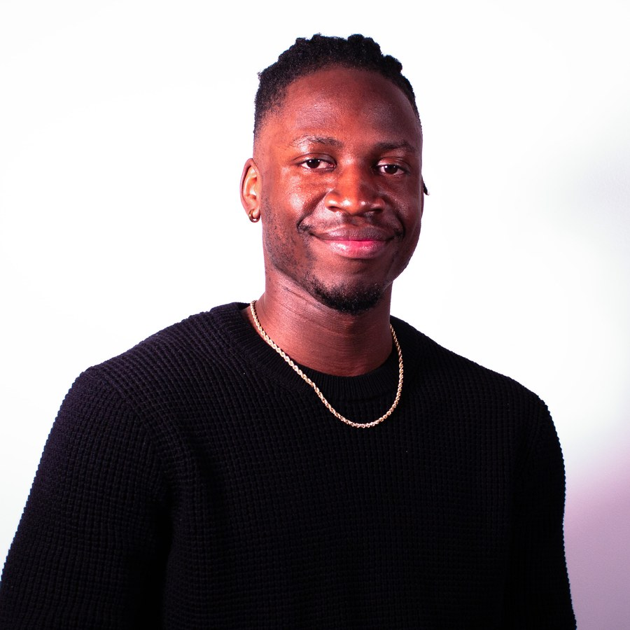

About
UX/product designer based in Frederick, MD. Every screen I ship answers to a specific research finding, not a hunch, and every claim in a case study traces back to a source or a test result.
No prior design internship. Instead: a case study built the way I'd want a junior hire's first project to look, research traced to sources, decisions traced to research, results traced to real testing. Convoy proves I can ship: a full-stack PWA, built solo, in daily production use. Reframing Letterboxd and CivicPulse round it out with competitive research and a civic-data concept. Different problems, same rigor.
Background: digital arts and media design (B.A., New Media, Penn State), doing visual systems and interaction design before "UX" was the job title on the door. I went deep on healthcare AI because trusting a model's output under time pressure is a genuinely hard design problem, not because I'm narrowing to one industry, I'm looking for any UX or UX-adjacent role where that same rigor applies.
The first three moves happen on every project. The fourth doesn't always, testing and shipping only reflect the projects that actually got that far.
1. Ideate
Frame the problem against real sources, not a hunch. Constraints, research questions, and who's actually affected, before any pixels.
2. Concept in Stitch
AI-assisted concepting to get several directions on screen fast, then pressure-test which one actually answers the research question.
3. Build in Figma
Wireframes to hi-fi on an 8pt grid with semantic tokens and real component states. Accessibility (Stark, WCAG 2.2 AA) and the Claude API are in the toolkit, used where a project actually calls for them, not applied uniformly by default.
4. Test and ship, when it gets there
Not every project reaches this stage yet. Healthcare AI Dashboard is the one that's been through two rounds of usability testing (SUS/NASA-TLX); Convoy is the one that shipped, Claude API included. Reframing Letterboxd and CivicPulse are concept-stage: reasoned from research, not user-tested or built.
Music, mostly: DJing, collecting records, playing guitar. I like building side-project tools for myself and other people, plus sports and time with the people I care about.